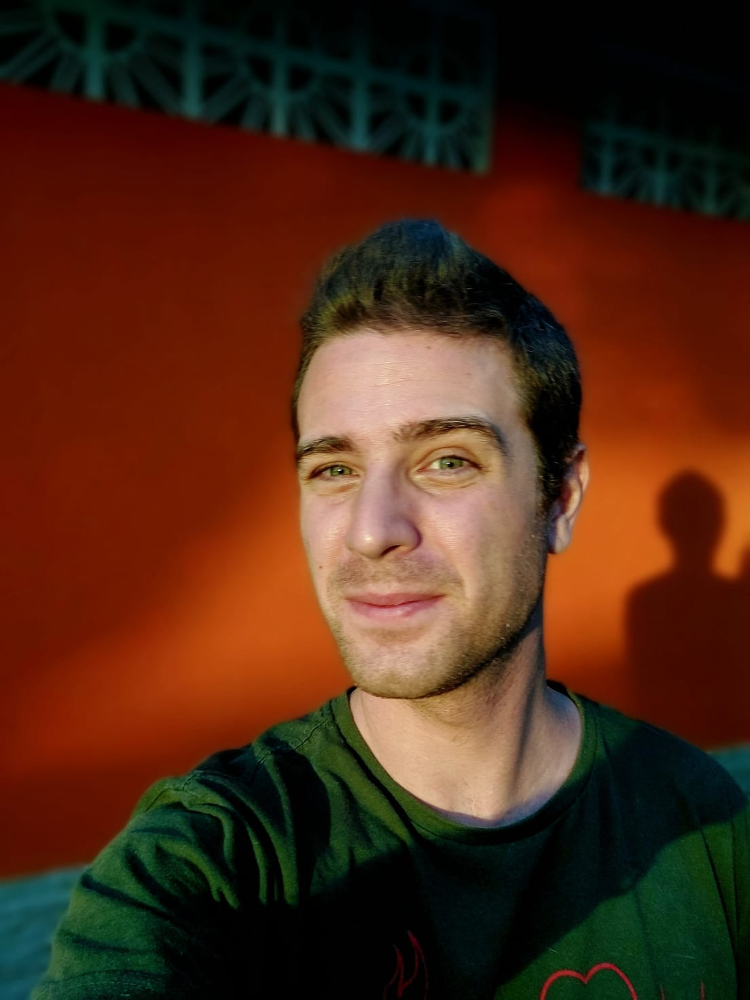
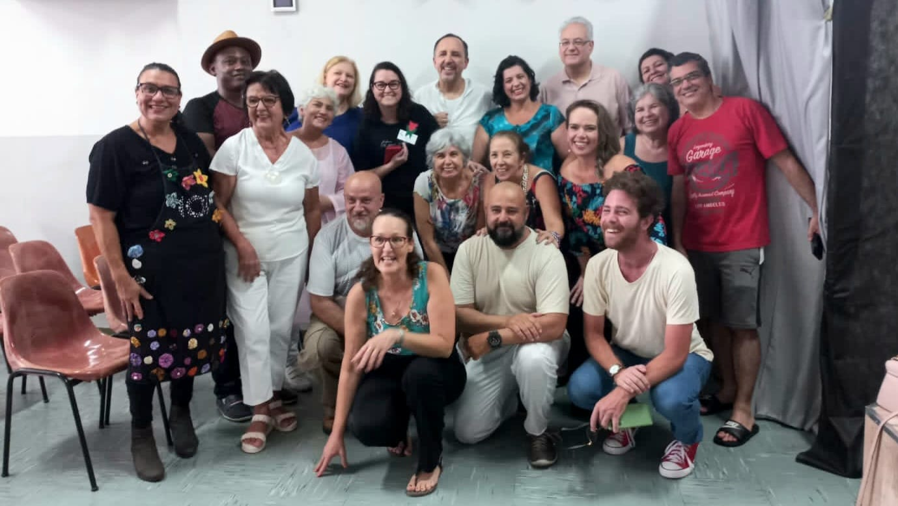
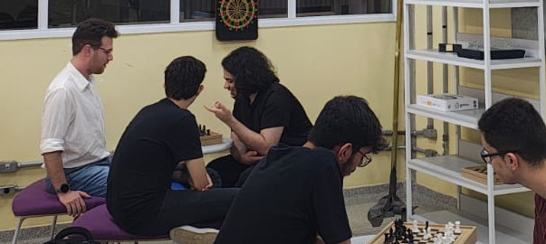
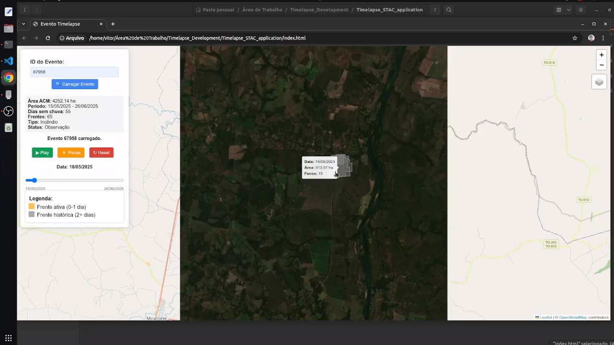
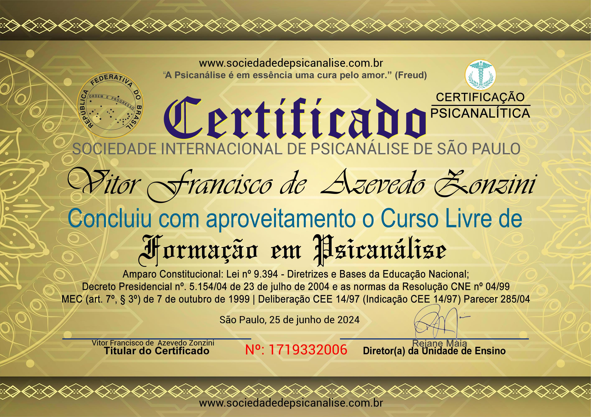
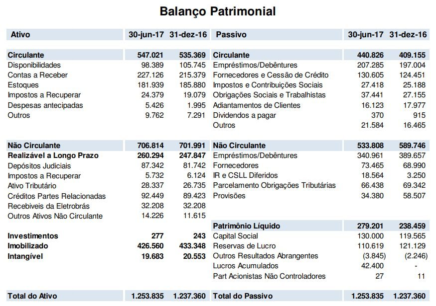

Unindo diferentes áreas para trazer soluções inovadoras e significativas
Ver ProjetosSou um profissional generalista com formação holística
Minha missão é quebrar barreiras.
Minha visão é multidisciplinar.
Meus valores são a prudência, a honestidade e a humildade.
Acredito que a união entre diferentes campos do conhecimento é solo para soluções inovadoras, criativas e justas.

A Arte sempre teve papel central na minha vida. Hoje, participo de projetos culturais com meus pares.
Saúde e Bem-Estar foi uma área conquistada. Tenho formação na psicanálise freudiana.
Atuando na área contábil, tive o privilégio de observar e aprender sobre Economia, Direito e Finanças.
Desenvolvimento de software em Python, Node.js, C/C++, entre outros. Criação de aplicações web,
mobile e sistemas que solucionam problemas reais através da tecnologia.
Acompanhe mais em:
https://github.com/frevisto

Grupo teatral que explora temas espíritas e sociais através da performance.
(ver imagem)

Grupo de colegas que praticam o esporte na biblioteca da Fatec.
Desenvolvimento de uma apostila de xadrez, com foco em estratégias e táticas, para iniciantes a jogadores intermediários.
(ver imagem)

Experiência intensa e imersiva em projeto de combate a queimadas em áreas
protegidas.
Desenvolvimento de testes em produtos e protótipo para visualização dos
eventos de fogo.
(ver imagem).
Performance em grupo de coral com músicas espíritas.

Formação em psicanálise freudiana, com foco na compreensão profunda do comportamento humano e suas motivações inconscientes.

Formação em análise de balanços patrimoniais, com foco na compreensão e interpretação dos estados financeiros.
Automação de processos contábeis.